Oracle monitoring options
Install STAP on sauropod
-
Login to sauropod and copy GIM installer from raptor to
/opt/lab_fileson local filesystem.1 2 3
mkdir -p /opt/lab_files scp -P 2223 raptor.demo.guardium:/opt/guardium_tz_bootcamp_automation/upload/source_files/agents/shell/guard-bundle-GIM-12.2.2.0_r123489_v12_x_1-rhel-8-linux-x86_64.gim.sh /opt/lab_files/ -
Install GIM client on sauropod.
1 2 3 4 5
cd /opt/lab_files chmod +x *.sh ./guard-bundle-GIM-12.2.2.0_r123489_v12_x_1-rhel-8-linux-x86_64.gim.sh -- --dir /opt/guardium --tapip sauropod --sqlguardip cm -
Login to cm UI and install STAP on sauropod. Select STAP 12.2.2_r123489_11 and set options:
Parameters:
- KTAP_ALLOW_MODULES_COMBO: Y
- STAP_SQLGUARD_IP: coll1.demo.guardium
-
Confirm that agent has been successfully deployed.
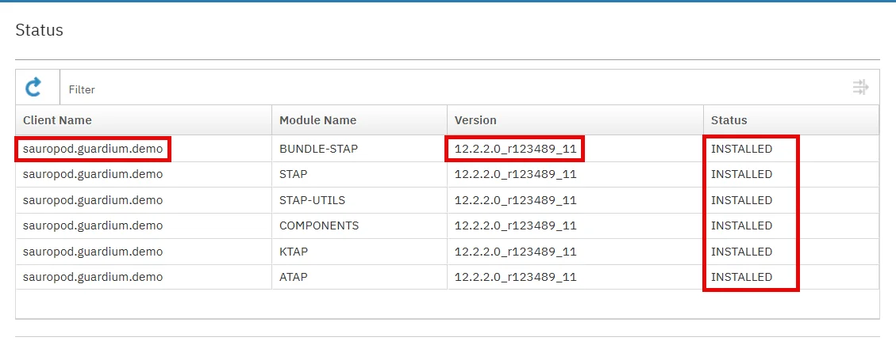
-
Check also in S-TAP Status on coll1 that KTAP is deployed.
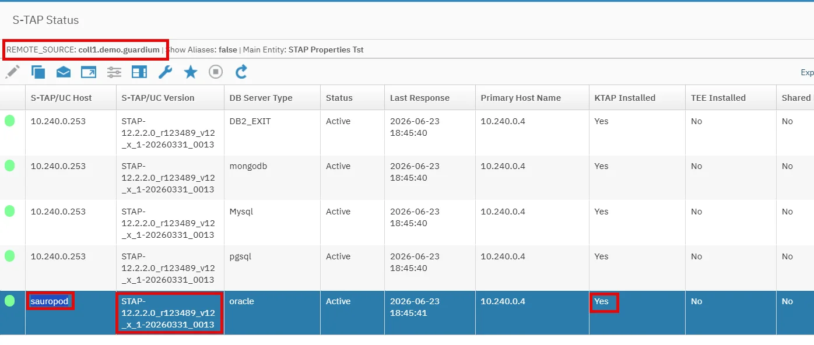


Oracle traffic visibility
-
We have Oracle instances ran on sauropod machine. Check a list of instances as a root, you should see ORCLDB and ORCL. The second one is belonging to Oracle working in the container, we will refer to it later in the lab.
ps -ef | grep pmon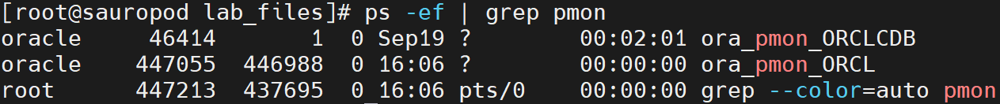
-
Change on sauropod context to oracle user.
su - oracle -
Let’s check what SID is set for this session
echo $ORACLE_SID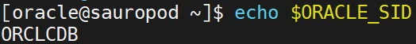
-
We have SQLcl installed on sauropod, login to Oracle instance as a system user with lab default password. The ORCLCDB is pluggable.
1 2 3
sql system SELECT name, cdb FROM v$database;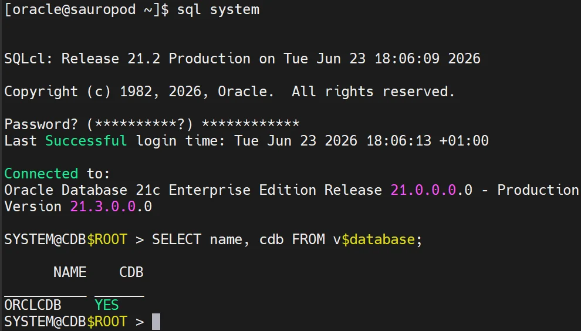
-
List of PDB instances. There is one with name ORCLPDB1.
SELECT pdb_name, status FROM cdb_pdbs ORDER BY pdb_name;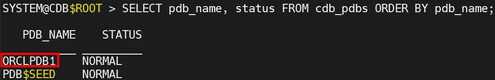
-
Let’s change the session context to ORCLPDB1 instance and check list of schemas and tables in one of it.
1 2 3 4 5 6 7
ALTER SESSION SET CONTAINER = ORCLPDB1; SELECT tablespace_name FROM dba_tablespaces ORDER BY tablespace_name; SELECT owner, table_name FROM dba_tables WHERE tablespace_name = 'HR_DATA'; exit;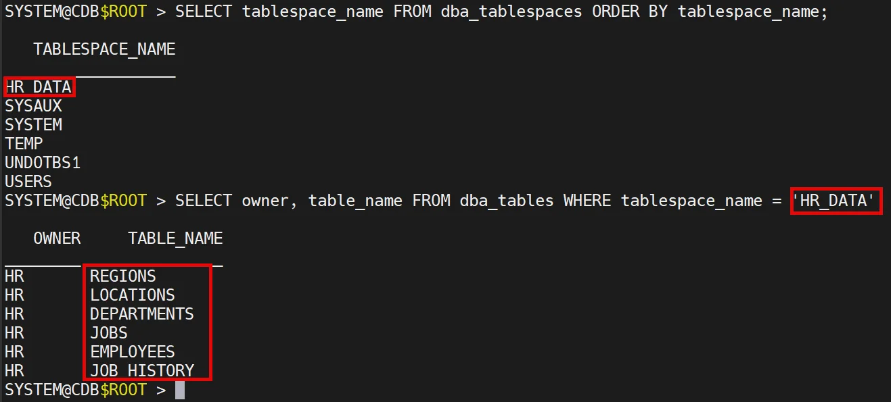
-
Check in coll1 UI the Full SQL (Training) report and confirm that Oracle traffic is visible.
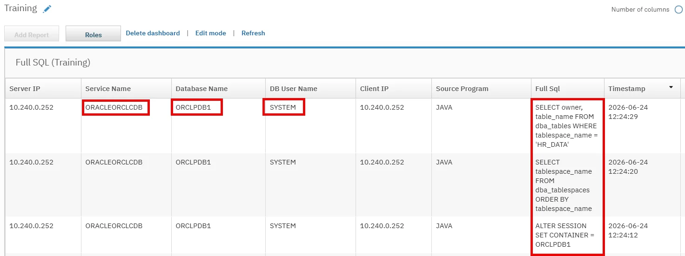
-
On coll1 clone Full SQL (Training) report. Name it Full SQL (session details) and proceed to the Selected Columns section by clicking Next.
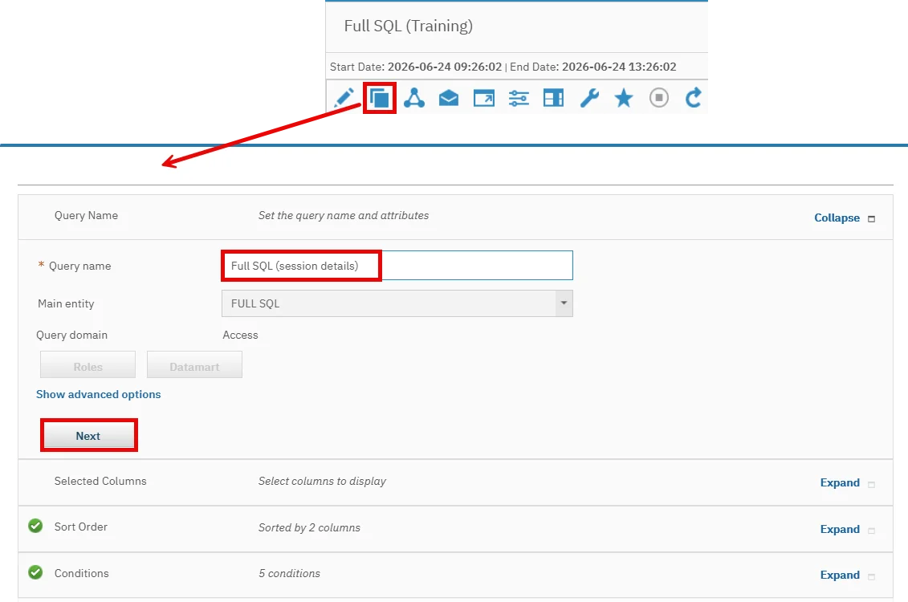
-
In this section, we can define what information will be displayed in the report. We can add attributes from the Entities and Attributes list to the Selected Columns list on the right. Attributes are grouped by entity. After selecting an attribute, use the to add it to the report. Add five attributes:
attributes:
- Network Protocol from Client/Server
- DB Protocol from Client/Server
- Session Encrypted from Session
- Encryption Type from Session
- Server Type from Client/Server
and Expand a Conditions pane.
-
Add condition for the Server Type attribute from the Client/Server entity using the DB_Type parameter with the LIKE operator and Save report.
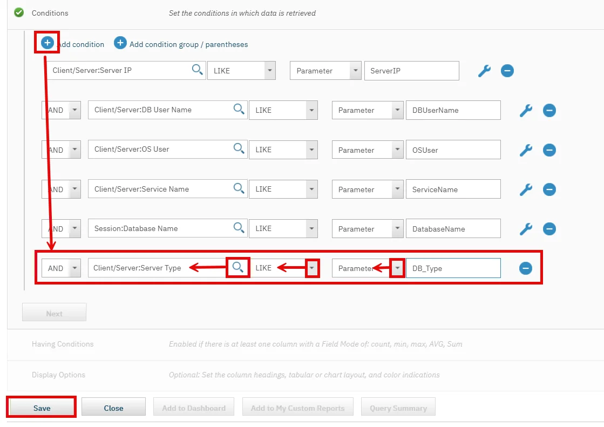
-
A confirmation of the operation will appear and then Close the report editing window.
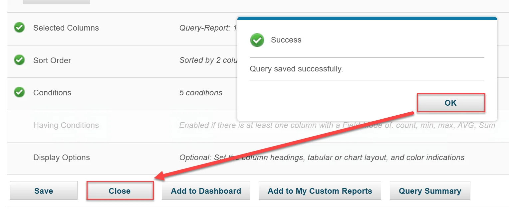
-
Create new dashboard with name Oracle and add into it a just cloned report.
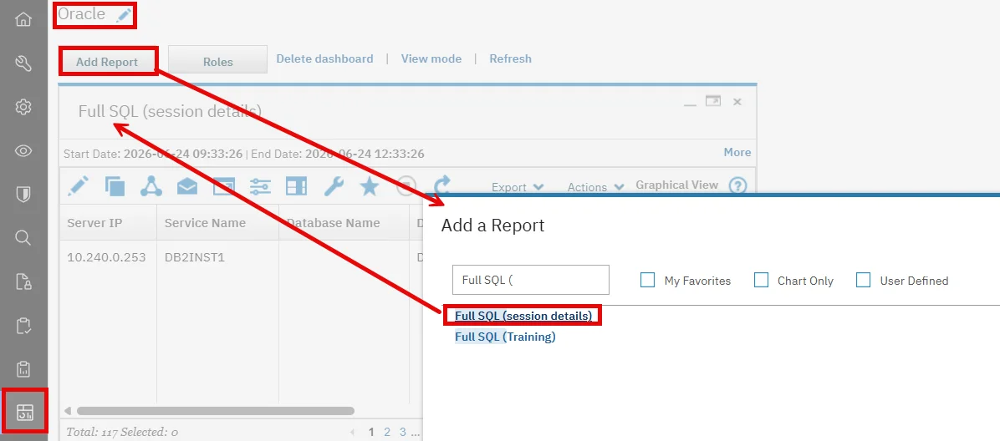
-
Edit report parameters and set for DB_Type value ORACLE. Now report will show only activity belonging to Oracle.
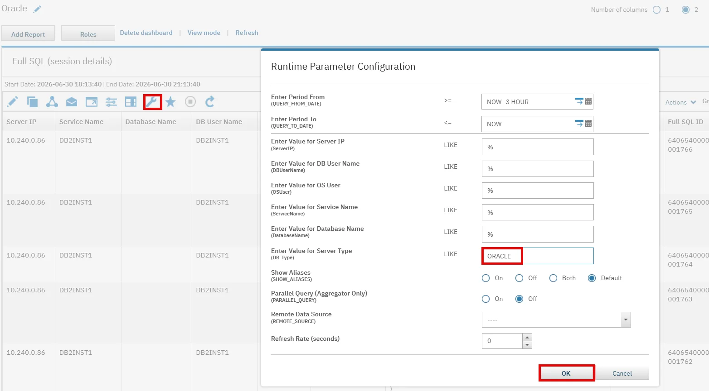
-
Review on sauropod the
tnsnames.orafile and notice that we have setup of four connection/protocol types there.cat $ORACLE_HOME/network/admin/tnsnames.ora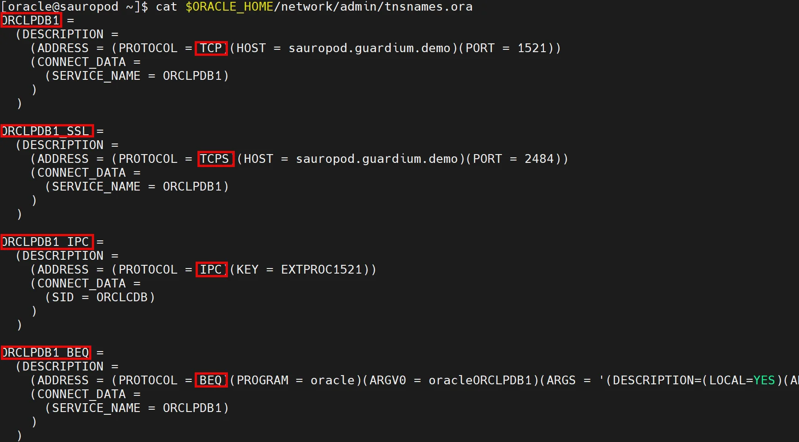
-
Connect as an oracle user using ORCLPDB1_BEQ connection (Bequeath connection), then check traffic visibility in Full SQL (session details) report on coll1.
1 2 3 4 5 6 7
sql system@ORCLPDB1_BEQ SELECT 'BEQ session to ORCLPDB1' FROM dual; SELECT * FROM hr.employees FETCH FIRST 10 ROWS ONLY; exit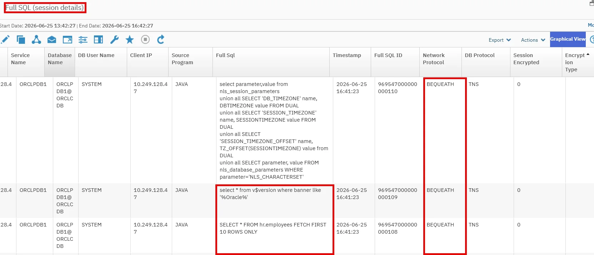
-
Now connect using ORCLPDB_IPC connection (shared memory) and check activity events in the report.
1 2 3 4 5 6 7 8 9
sql system@ORCLPDB1_IPC SELECT 'IPC session to ORCLPDB1' FROM dual; ALTER SESSION SET CONTAINER = ORCLPDB1; SELECT * FROM hr.employees FETCH FIRST 10 ROWS ONLY; exit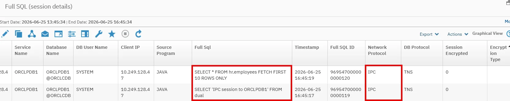
-
Next type of connection is TCP and use ORCLPDB1 connection string.
1 2 3 4 5 6 7
sql system@ORCLPDB1 SELECT 'TCP session to ORCLPDB1' FROM dual; SELECT * FROM hr.employees FETCH FIRST 10 ROWS ONLY; exit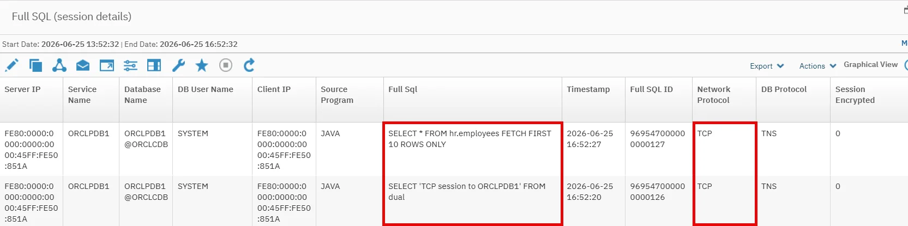
-
All previous connections used unencrypted communication between the Oracle client and server. Now connect using TCPS, which technically leverages SSL/TLS encryption between both endpoints. Oracle also provides its own native encryption mechanism (ASO – Advanced Security Option), which is also supported by Guardium.
This time traffic will not appear in the report because ATAP must be deployed in place.1 2 3 4 5 6 7
sql system@ORCLPDB1_SSL SELECT 'TCPS encrypted session to ORCLPDB1' FROM dual; SELECT * FROM hr.employees FETCH FIRST 10 ROWS ONLY; exit


ATAP setup
- To configure ATAP, we must stop the Oracle database services on sauropod.
1 2 3 4 5 6 7 8 9 10 11
su - oracle lsnrctl stop sql / as sysdba shutdown immediate; exit exit - As a root we can now configure ATAP. Register oracle user for ATAP.
/opt/guardium/modules/ATAP/current/files/bin/guardctl authorize-user oracle - Set a new ATAP configuration for binaries located in
/opt/oracle/product/19c/dbhome_1./opt/guardium/modules/ATAP/current/files/bin/guardctl --db-type=oracle --db-instance=ORCLCDB --db_user=oracle --db_home=/u01/app/oracle/product/21c/dbhome_1/ --db_base=/home/oracle --db_version=21 store-conf -
Activate ATAP for Oracle.
/opt/guardium/modules/ATAP/current/files/bin/guardctl --db-type=oracle --db-instance=ORCLCDB activate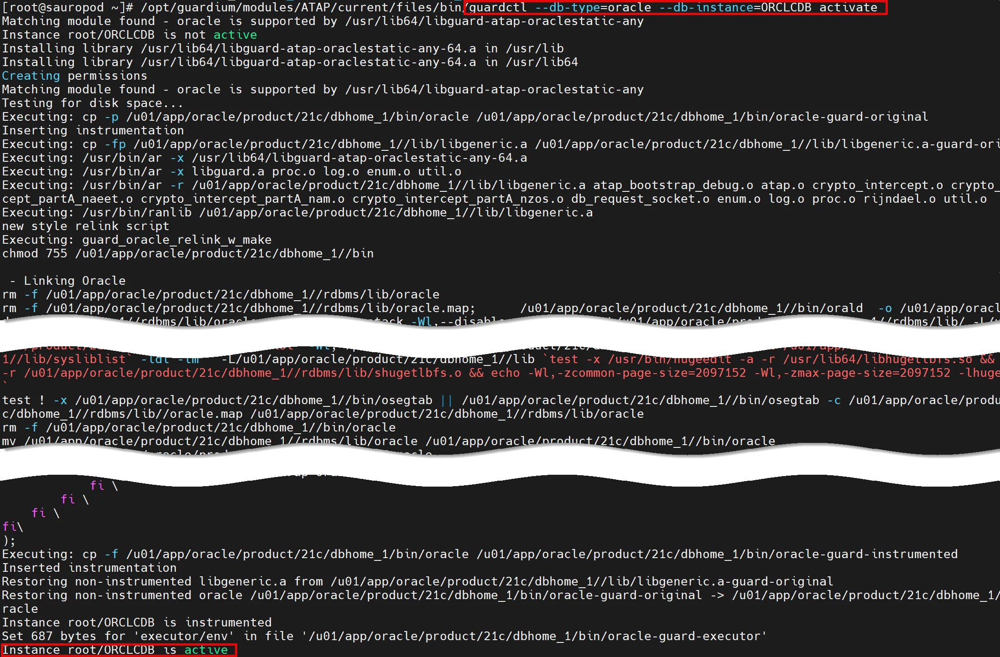
-
Now we can start Oracle instances again.
1 2 3 4 5 6 7 8 9
su - oracle sql / as sysdba startup exit lsnrctl start -
Let’s connect to Oracle with SSL again and check traffic visibility (if connection will fail, wait a while to start listener services fully).
1 2 3 4 5 6 7 8 9
sql system@ORCLPDB1_SSL SELECT sys_context('USERENV', 'NETWORK_PROTOCOL') as network_protocol FROM dual; SELECT 'SSL connection to ORCLCDB' from dual; SELECT * FROM hr.employees FETCH FIRST 10 ROWS ONLY; exit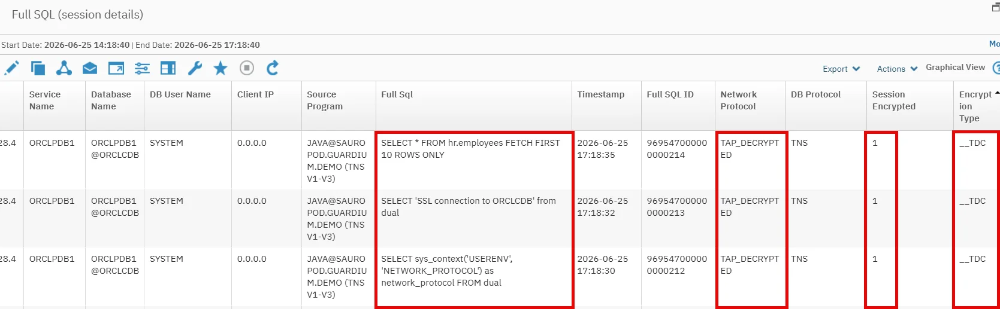


Check Oracle instance in container
-
On sauropod check as a root a status of Oracle container. Notice that the container is named oracle_db_21c, and the service is exposed on port 1522 to avoid conflicts with the listener already running on sauropod.
podman ps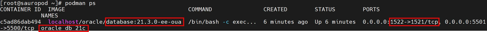
-
Confirm Oracle DB readiness. The container logs should indicate that the database is ready for use.
podman logs oracle_db_21c | grep -C 5 'IS READY TO USE'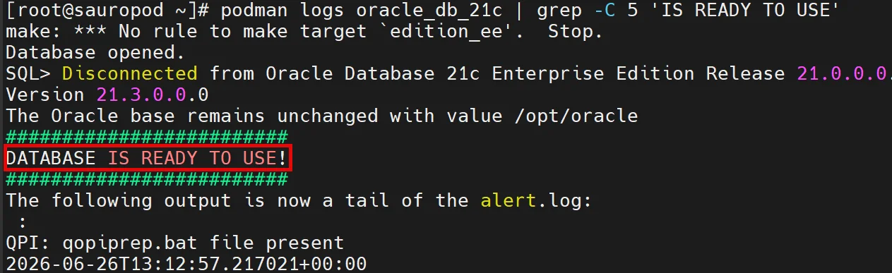
-
To check instance connection open bash to our container and login to database as system (use the standard password for services). Log in using port 1521, as the connection is established from within the container.
1 2 3
podman exec -it oracle_db_21c bash sqlplus system@localhost/ORCLPDB1:1521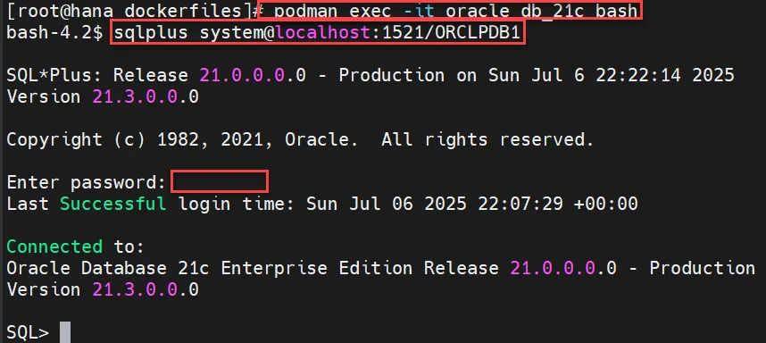
-
Execute some simple queries (first one displays Oracle release and the second one the information about pluggable database support.
1 2 3
SELECT BANNER FROM V$VERSION WHERE BANNER LIKE 'Oracle Database%'; SELECT CDB FROM V$DATABASE;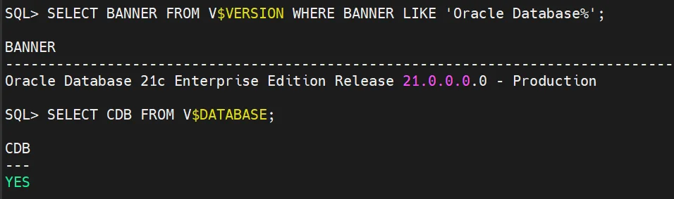
-
Confirm that Oracle Unified Audit (OUA) is activated in our instance.
1 2 3 4 5
SELECT VALUE AS ORACLE_UNIFIED_AUDIT_VALUE FROM V$OPTION WHERE PARAMETER = 'Unified Auditing'; exit; exit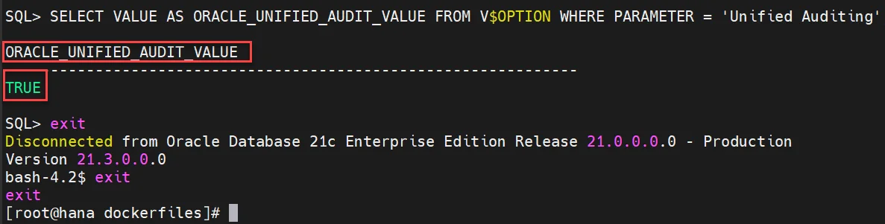


Traffic generator
-
Check traffic generator configuration for Oracle (on raptor) and notice that activity will be generated in the Oracle container on sauropod.
cat /opt/guardium_tz_bootcamp_automation/upload/guardium_notes_dbtraffic/config/oracle_container_sauropod.yaml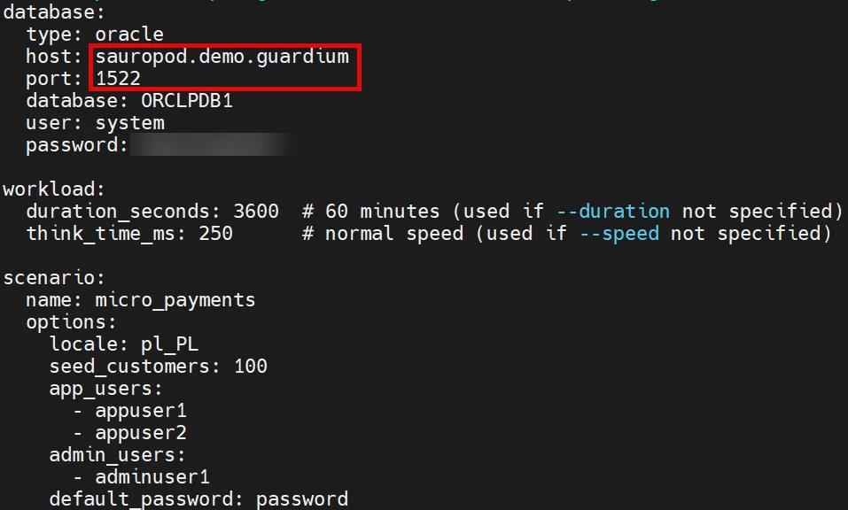
-
On raptor, start the traffic generator for Oracle database running in a container on sauropod.
Ctrl+C1 2 3 4 5 6 7
cd /opt/guardium_tz_bootcamp_automation/upload/guardium_notes_dbtraffic source venv/bin/activate guardium-notes-dbtraffic --config config/oracle_container_sauropod.yaml rebuild guardium-notes-dbtraffic --config config/oracle_container_sauropod.yaml rundeactivate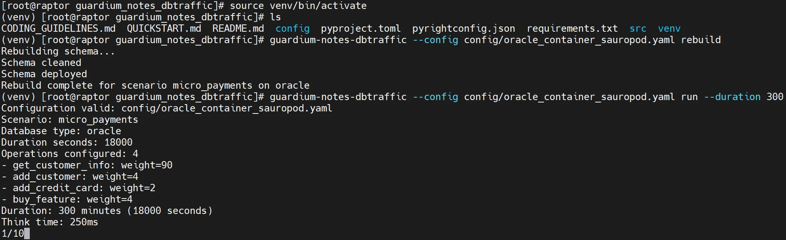
You can interrupt script by inserting Ctrl+C keystroke. -
Open Full SQL (session details) report on coll1 and notice that we see traffic generated in the container. This is not standard behavior and is only due to the use of virtualization/containerization (Docker) running directly on the host OS kernel, where the agent is already installed.
In most cases, containers are orchestrated by Kubernetes or managed by a cloud/service provider, and the traffic will not be captured by the agent. It is also worth noting that only unencrypted traffic is visible. If the container were configured to use SSL or ASO, there would be no ability to install ATAP inside the container, and the traffic would not be captured.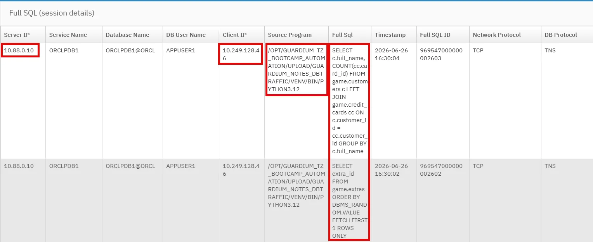
-
Let’s disable KTAP on sauropod to be able focus on agentless methods of container monitoring. In cm UI set KTAP_ENABLED to 0 for sauropod STAP.
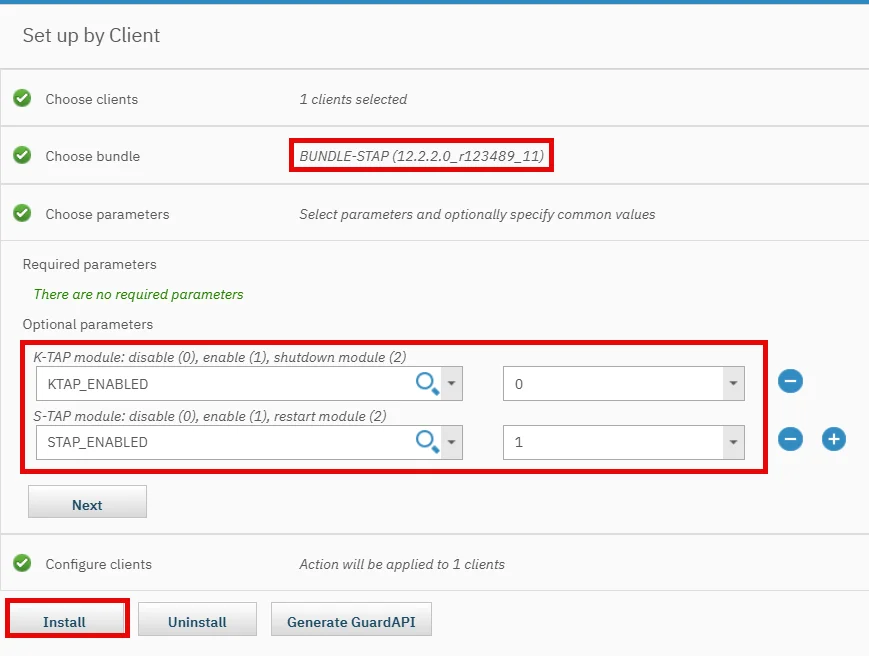
-
To unload KTAP from kernel restart sauropod machine (confirm that previous parameter change finished successfully).
shutdown -r now -
After a while run on raptor the traffic generator again and confirm that new activity is not longer intercepted (check lack a new queries in the report on coll1).
Ctrl+C1 2 3 4 5
cd /opt/guardium_tz_bootcamp_automation/upload/guardium_notes_dbtraffic source venv/bin/activate guardium-notes-dbtraffic --config config/oracle_container_sauropod.yaml rundeactivate


ETAP monitoring of containerized Oracle service
-
Now configure ETAP on raptor to proxy traffic to the Oracle container on sauropod. To do this, generate a new certificate using the CA created in ETAP lab. Login to coll1 cli and request certificate for ETAP instance (CSR request) using command:
create csr external_stapinsert certificate request parameters:
- unique alias, like : sauropod-oracle-container-etap
- etap certificate common name: oraclecoll1.demo.guardium
- organization unit name: Demo
- add additional OU: n
- organization name: Guardium
- city: <your city name>
- province: <your province name>
- country code: <your 2-digits country code>
- email of collector certificate owner, can be fake: <email_address>
- accept default algorithm: Enter
- accept default key length: Enter
- insert FQDN of your collector for SAN #1: coll1.demo.guardium
- press ENTER for SAN #2: Enter
Then CSR will be generated and write down in notepad the entire alias and related to it the token (two bottom lines).
-
Then copy displayed Certificate Request to file on raptor machine -
/opt/ETAP/ca/etap2.csr.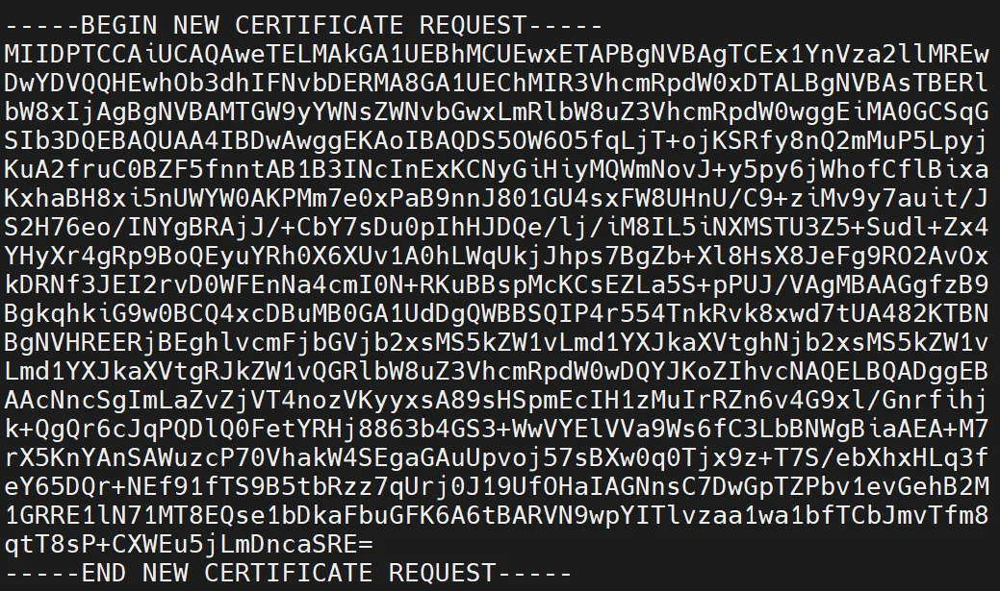
-
Sign certificate request from coll1 using created in the ETAP lab a CA cert.
1 2 3
cd /opt/ETAP/ca openssl x509 -sha256 -req -days 3650 -CA ca.pem -CAkey ca.key -CAcreateserial -CAserial serial -in etap2.csr -out etap2.pem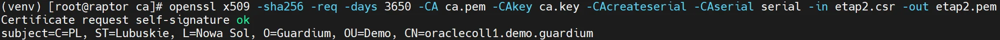
In the current directory certificate based on CSR generated on coll1 will appear inetap2.pemfile. -
Now on coll1 import ETAP certificate –
etap2.pemstored in/opt/ETAP/ca. You must insert an alias name generated during the CSR request in point 1. Confirm correctness of CSR reference (Y).store certificate external_stap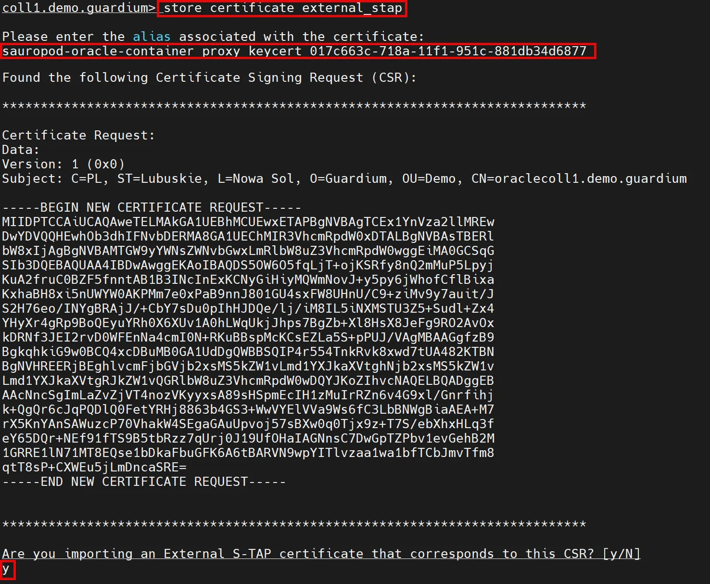
-
Insert the certificate from
etap2.pemfile and press and Enter and Ctrl+D.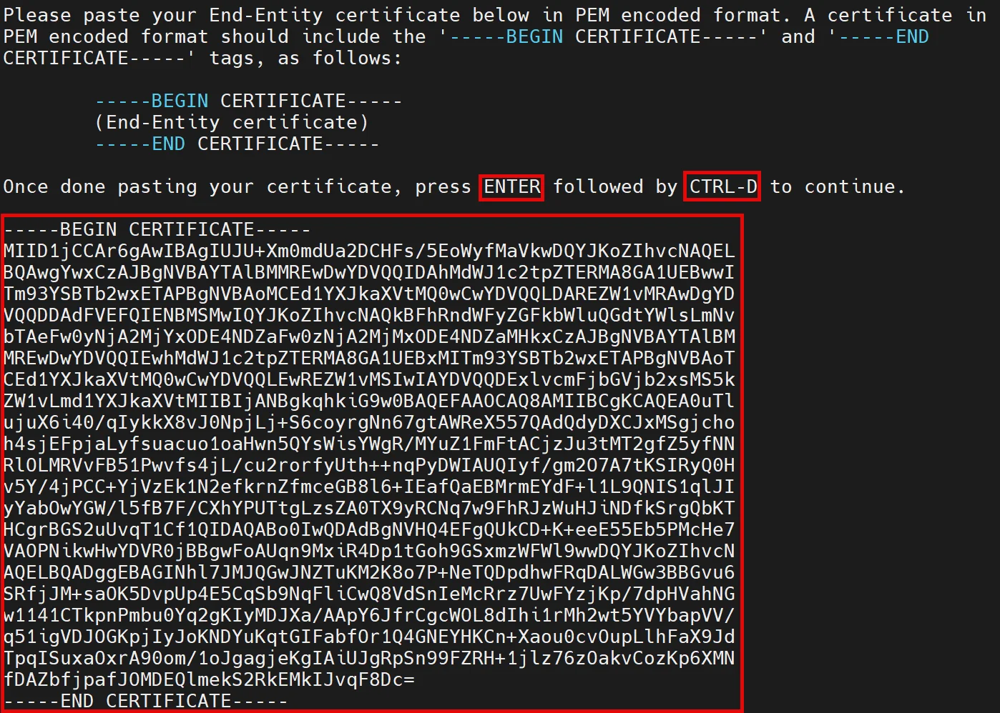
-
Then certificate should be imported to coll1 wallet.
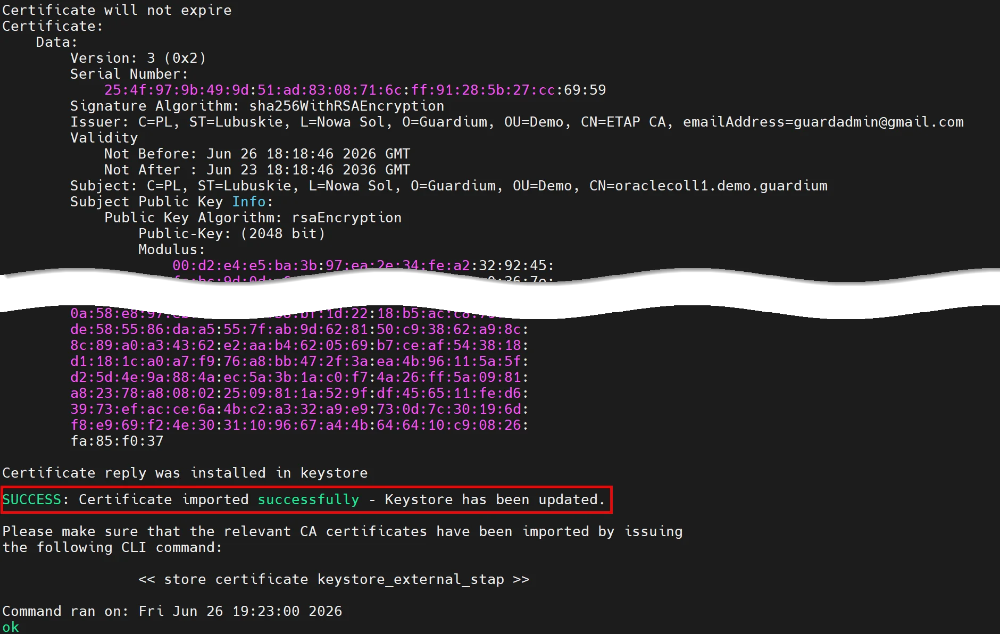
-
You can list ETAP certificates on coll1 and notice that a new added appears on the list.
show certificate external_stap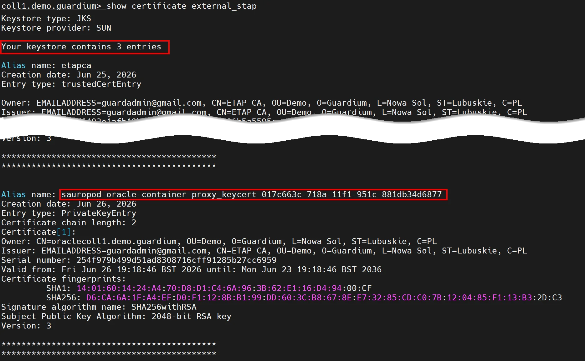
-
Check the image tag pulled earlier on raptor.
podman images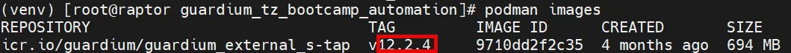
-
Copy ETAP quadlet file for Oracle to
/etc/container/systemdon raptor.cp /opt/guardium_tz_bootcamp_automation/upload/source_files/oracle/oracle_external_stap.container /etc/containers/systemd/oracle-etap.container -
Update quadlet file /etc/containers/systemd/oracle-etap.container and set the correct values for parameters:
quadlet parameters to set:
- Image – insert correct ETAP release
- STAP_CONFIG_PROXY_SECRET – should be a token generated with certificate CSR in point 1
- STAP_CONFIG_SQLGUARD_0_SQLGUARD_IP – IP address of coll1
- STAP_CONFIG_PROXY_DB_HOST – IP address of proxied database service – it should be sauropod IP
-
Reinitialize systemd deamon.
systemctl daemon-reload -
Start ETAP instance.
systemctl start oracle-etap -
Check list of ran ETAP containers on raptor. One will be just deployed for Oracle container instance working on sauropod.
podman ps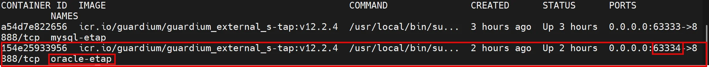
-
Check the coll1 UI the External S-TAP instances view (search External S-TAP Control) and confirm that the new one appeared.
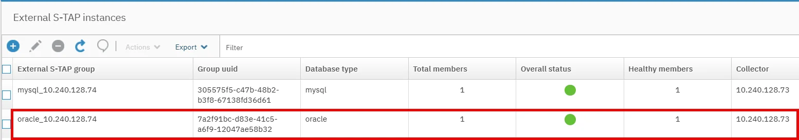
-
Because we will get access to ETAP service remotely we must open the access point port (lets do it for both ETAP instances ran on raptor).
1 2 3
firewall-cmd --permanent --add-port=63333/tcp --add-port=63334/tcp firewall-cmd --reload -
Let us connect to Oracle containerized instance on sauropod through ETAP. We have Oracle client installed on sauropod so we must connect from oracle account located there.
1 2 3 4 5 6 7 8 9 10 11 12 13 14 15
su - oracle sql system@//raptor.demo.guardium:63334/ORCLPDB1 SELECT 'CONNECTION THROUGH ETAP' FROM DUAL; SELECT BANNER FROM V$VERSION WHERE BANNER LIKE 'Oracle Database%'; SELECT CDB FROM V$DATABASE; SELECT VALUE AS ORACLE_UNIFIED_AUDIT_VALUE FROM V$OPTION WHERE PARAMETER = 'Unified Auditing'; exit exit -
Check events visibility in Full SQL (session details) report on coll1.
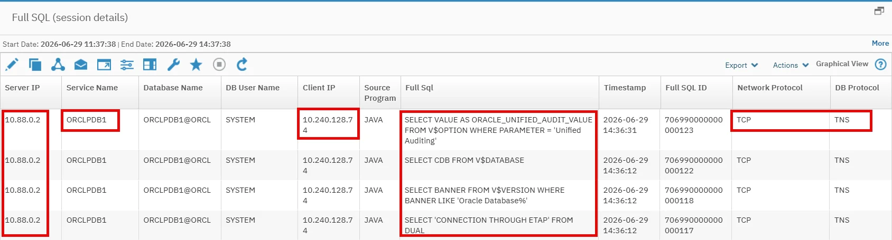
-
On raptor run the traffic generator in the background without using the proxy and let it run continuously to support monitoring of the Oracle container database using two additional methods.
1 2 3 4 5
cd /opt/guardium_tz_bootcamp_automation/upload/guardium_notes_dbtraffic source venv/bin/activate guardium-notes-dbtraffic --config config/oracle_container_sauropod.yaml run --duration 300


Configure Oracle in container to store activity in OUA
-
Let’s create user who can configure Oracle Unified Audit (OUA) settings, on sauropod login to ORCLPDB1 pluggable database and create secadmin user (define your password). Then grant to secadmin administrative rights for OUA configuration.
1 2 3 4 5 6 7 8 9
su - oracle sql system@sauropod.demo.guardium:1522/ORCLPDB1 create user secadmin identified by "<set_password>"; grant CONNECT, SELECT ANY DICTIONARY, SELECT_CATALOG_ROLE, AUDIT_ADMIN, CREATE PROCEDURE, DROP ANY PROCEDURE, AUDIT SYSTEM, AUDIT ANY, CREATE JOB to secadmin; exit; -
Now we will use just created secadmin user to configure OUA policy. OUA includes a lot of predefined policies and some of them are activated. To list of enabled policies, execute command:
1 2 3
sql secadmin@sauropod.demo.guardium:1522/ORCLPDB1 SELECT POLICY_NAME FROM AUDIT_UNIFIED_ENABLED_POLICIES;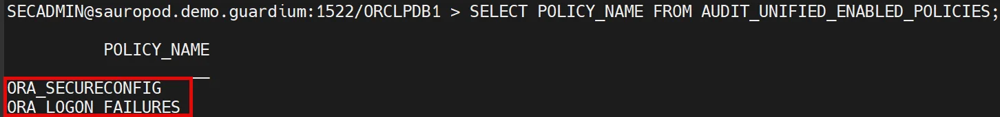
-
Check what SQL’s are audited by enabled policies. You should see GRANT and USER related SQL commands related to dbtraffic tool activity. However, there is no information about normal operations in application schema:
SELECT SQL_TEXT FROM AUDSYS.AUD$UNIFIED; -
Create a new audit policy to audit all game application tables (/ is a separate command)
1 2 3
BEGIN DECLARE v_cnt NUMBER; BEGIN SELECT COUNT(*) INTO v_cnt FROM audit_unified_policies WHERE policy_name='GAME_APP'; IF v_cnt=0 THEN EXECUTE IMMEDIATE 'CREATE AUDIT POLICY GAME_APP ACTIONS ALL ON game.customers, ALL ON game.credit_cards, ALL ON game.transactions, ALL ON game.extras, ALL ON game.features'; END IF; EXECUTE IMMEDIATE 'AUDIT POLICY GAME_APP'; END; END; / -
Create scheduler to recreate policy if someone will remove it
1 2 3
BEGIN DBMS_SCHEDULER.create_job(job_name=>'ENSURE_GAME_APP_AUDIT', job_type=>'STORED_PROCEDURE', job_action=>'ENSURE_GAME_APP_AUDIT', repeat_interval=>'FREQ=MINUTELY;INTERVAL=45', enabled=>TRUE); END; / -
Check our policy existence
SELECT POLICY_NAME FROM AUDIT_UNIFIED_ENABLED_POLICIES;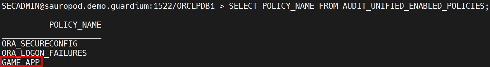
-
Then monitor the number of audited events by just activated policy and notice that its number is growing because we have traffic generator ran.
1 2 3
SELECT COUNT(*) from AUDSYS.AUD$UNIFIED WHERE UNIFIED_AUDIT_POLICIES='GAME_APP'; exit -
Now we need the Oracle user to get access to audited events by Guardium (please use simple password like guardium because of some issues when special characters appear in it)
1 2 3 4 5 6 7 8 9 10 11
sql system@//sauropod.demo.guardium:1522/ORCLPDB1 CREATE USER guardium IDENTIFIED BY <password without special characters>; GRANT CONNECT, RESOURCE to guardium; GRANT SELECT ANY DICTIONARY TO guardium; exec DBMS_NETWORK_ACL_ADMIN.APPEND_HOST_ACE(host => 'localhost', ace => xs$ace_type(privilege_list => xs$name_list('connect', 'resolve'), principal_name => 'guardium', principal_type => xs_acl.ptype_db)); exit; -
Connect as a guardium user and check access to audited events in OUA. Last SELECT is displaying local IP address of Oracle instance in the container. We should expect this value as a Server IP in the report.
1 2 3 4 5 6 7 8 9
sql guardium@//sauropod.demo.guardium:1522/ORCLPDB1 SELECT COUNT(*) FROM AUDSYS.AUD$UNIFIED; SELECT UTL_INADDR.get_host_address FROM DUAL; exit exit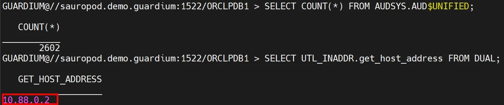


OUA with STAP
-
Open in coll1 UI the S-TAP Status view and confirm that STAP on sauropod has no KTAP enabled.
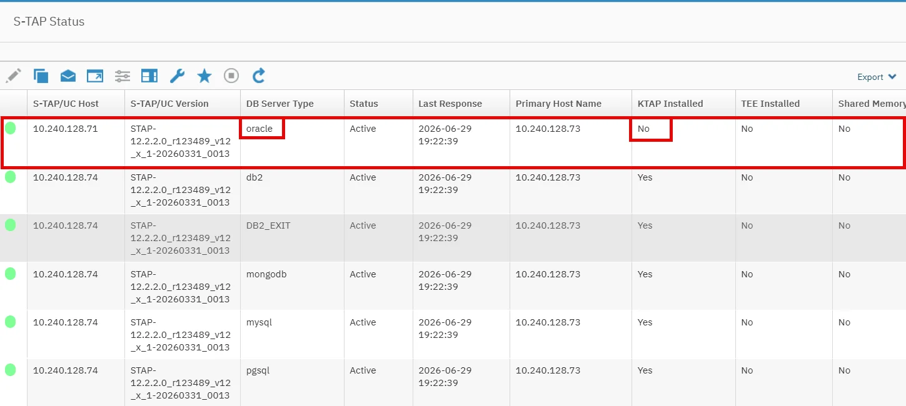
-
Also, the Full SQL (session details) report ran on coll1 does not show the recent activity generated in the Oracle database.
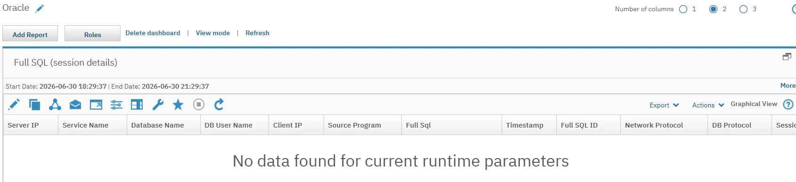
-
We will configure the STAP on sauropod to consume events from OUA tables in Oracle container. Technically, the STAP can be deployed anywhere but must have access to monitored instance over JDBC. Let’s download to sauropod Oracle instant client from raptor and install it (run on sauropod).
1 2 3
scp -P 2223 raptor.demo.guardium:/opt/guardium_tz_bootcamp_automation/upload/source_files/oracle/oracle-instantclient-basic-21.1.0.0.0-1.x86_64.rpm /opt/lab_files/ dnf -y install /opt/lab_files/oracle-instantclient-basic-21.1.0.0.0-1.x86_64.rpm - Create the
/usr/lib/oracle/21/client64/lib/network/admin/tnsnames.orafile and define inside the instance connection definition:ORCLPDB1 = (DESCRIPTION = (ADDRESS = (PROTOCOL = TCP)(HOST = sauropod.demo.guardium)(PORT = 1522)) (CONNECT_DATA = (SERVER = DEDICATED) (SERVICE_NAME = ORCLPDB1) ) ) -
Edit STAP configuration of agent installed on sauropod in S-TAP Control in coll1 UI.
in the Details section add two parameters:
- SQL configuration properties:
/usr/lib/oracle/21/client64/lib/network/admin - LD library paths:
/usr/lib/oracle/21/client64/lib
The first refers to the directory where the
tnsnames.orafile is located, and the second refers to the directory containing theOracle Instant Clientlibraries.Then Save changes.
- SQL configuration properties:
-
We must save the Oracle guardium user credentials on coll1. Execute command from coll1 cli:
grdapi store_sql_credentials stapHost=sauropod username=guardium password=<simple password provided in point 8 of previous chapter> -
Then execute this command to create OUA consumer configuration (this is also possible from UI but there is a bug, so I recommend using API)
grdapi create_sql_configuration dbType=Oracle instance=ORCLPDB1 stapHost=sauropod username=guardium -
Check SQL activity report and notice that events appeared
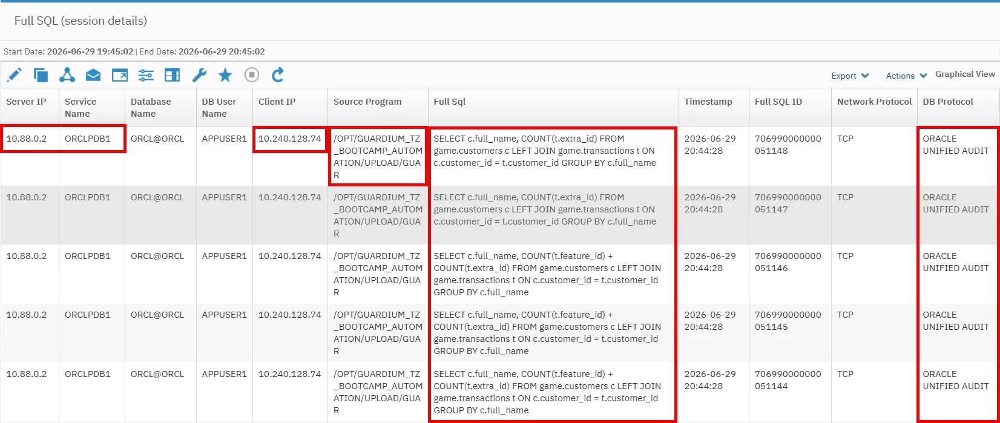
-
Now disable STAP OUA configuration. In the next chapter we will use a different method of OUA event consumption without STAP. In cm UI stop the agent on the sauropod machine by setting the STAP_ENABLED parameter to 0.
-
Confirm on coll1 in S-TAP Control view that agent on sauropod is disabled.


OUA with UC 2.0 (with kafka consumer)
-
First confirm that our coll1 is not working in the UC 1.0 (Legacy mode). From cli on coll1:
grdapi get_guard_param paramName=LEGACY_UC_CONFIG_ENABLED -
If value is true disable UC 1.0 support:
grdapi modify_guard_param paramName=LEGACY_UC_CONFIG_ENABLED paramValue=0 -
Run UC events consumer framework on coll1 and confirm it is running.
1 2 3
grdapi run_universal_connector grdapi get_universal_connector_status -
We must convert kafka1 appliance to be a Kafka node. From raptor login to kafka1 appliance and check the unit type and notice that it is set to Managed collector
show unit type -
Set unit type to kafka-node (it will restart appliance).
store unit type kafka-node -
Re-login to kafka1 and confirm the changed unit type (the appliance conversion takes time, so wait few minutes).
show unit type -
Open Central Management view on cm and confirm that kafka1 is displayed on the list with Kafka-Node label.
-
Because of the certificate setup and synchronization. Wait 90 minutes before contunuation of this lab!
-
After minimum 90 minutes. In cm UI open Kafka Cluster Management view and create a New Cluster using plus () icon. Provide cluster name kafka_cluster_1 and open kafka node list. Select our kafka1 node and press OK.
-
Node should appear in the Cluster members list. Press OK to finalize cluster creation – ignore warning about minimum size of kafka cluster.
-
Refresh cluster list from time to time till the status just created cluster will be notified as a ready ()
-
In cm UI open Credential Manager view and add new one.
Credential details:
- Name: oracle_container_sauropod
- Credential type: JDBC Credentials
- JDBC Username: guardium
- JDBC Password: <defined in the point 8 of Configure Oracle in container to store activity in OUA chapter>
Just created guardium user credentials should appear on the list.
-
Now add a new profile in Datasource Profile Management view on cm.
Insert:
- Name: oracle_21_container_sauropod
- Plug-in: OUA over JDBC connect 2.0
- Credential: oracle_container_sauropod (created earlier)
- Kafka cluster: kafka_cluster_1
- Hostname: sauropod.demo.guardium
- Port: 1522
- Service name: ORCLPDB1
- JDBC driver library: <upload the JDBC driver (ojdbc8.jar) located in oracle directory in student materials>
-
When all required fields are filled up, we can save profile (OK) and the pop-up message will inform that configuration is accepted. Then our profile should appear on the list.
-
Select profile and press Test connection. The configuration should be tested, and Status column should display now the green checkmark.
-
Now, we can deploy profile on the coll1. Select just created profile and then select Install option from Install list and in the Install Profile window select our coll1 and press Run Now button. After a while (refresh a view) the profile should be updated with information that it was deployed.
-
Check Full SQL (session details) report on coll1 and confirm that Oracle traffic is consumed by OUA by universal connector.


Appendix
Dependencies:
It is better to select one of UC’s configuration instead doing both configurations 1.0 and 2.0. The kafka1 machine can be used for other purposes – LTR node for example.
Resources:
- STAP and OUA configuration:
https://www.ibm.com/docs/en/gdp/12.x?topic=lustcpdt-linux-unix-configuring-s-tap-interception-using-oracle-unified-audit
https://www.ibm.com/docs/en/gdp/12.x?topic=reference-create-sql-configuration - UC 1.0 with OUA - https://github.com/IBM/universal-connectors/blob/main/filter-plugin/logstash-filter-oua-guardium/OuaOverPipeReadme.md
- UC 2.0 with OUA - https://www.ibm.com/docs/en/gdp/12.x?topic=connector-configuring-universal-connectors-by-using-central-manager
Instructor notes: